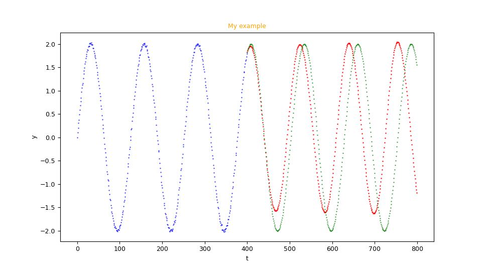

Forecast of a univariate equally spaced time series with TensorFlow
This post deals with the forecast of a univariate and equally spaced time series through various neural network taxonomies implemented with TensorFlow. The code shown here allows the user to test different combinations of network types (LSTM, Bidirectional LSTM, Convolutionals, ConvLSTM and other some combinations in cascade among them) operating exclusively on the command line of Python programs that implement the following features:
- Dataset generation
- Network taxonomy definition + hyperparameter configuration
- Forecast (Prediction)
- Generation of a scatter graph about the results
- Generating a video about the learning process of the network
- Diagnostics
Dataset generation
Purpose of the Python program uvests_gen.py
is to generate the datasets (training and/or test) to be used in the following phases;
the program takes in command line the generator function of the time series in syntax lambda body on the independent variable $t$, the interval of the independent variable (start, end and discretization step)
and generates the dataset in a csv file by applying the function to the past interval.
The output csv file has only one column (with header) that contains the values of the dependent variable $y=f(t)$, i.e. the values of the function $f(t)$ corresponding to the value of $t$ in the specified range;
the independent variable $t$ (the time) is not explicitly present on the file because time in the equally spaced time series is implicit.
To get the usage of the program, simply run the following command:
$ python uvests_gen.py --helpuusage: uvests_gen.py [-h] [--version] --tsout TS_OUTPUT_FILENAME --funct
FUNC_T_BODY [--tbegin TIME_BEGIN] [--tend TIME_END]
[--tstep TIME_STEP] [--noise NOISE_BODY]
uvests_gen.py generates an univariate equally spaced time series
optional arguments:
-h, --help show this help message and exit
--version show program's version number and exit
--tsout TS_OUTPUT_FILENAME
univariate equally spaced time series output file (in
csv format)
--funct FUNC_T_BODY func(t) body (lamba format)
--tbegin TIME_BEGIN time begin (default:0)
--tend TIME_END time end (default:100)
--tstep TIME_STEP time step (default: 1.0)
--noise NOISE_BODY noise(sz) body (lamba format)-
-h, --help: shows the usage of the program and ends the execution.
-
--version: shows the version of the program and ends the execution.
-
--tsout: path (relative or absolute) of the csv file to be generated, which will contain the univariate and equally spaced time series.
-
--funct: the generator function $y=f(t)$ of the time series in lamba body format where $t$ is the independent variable.
-
--tbegin e --tend: interval of the variable $t$, between
--tbegin(included) and--tend(excluded).
-
--tstep: discretization step of the independent variable $t$; the default value is 1.0.
-
--noise: the noise-generating function in lamba body format, where $sz$ is the number of items in the series.
An example of using the program uvests_gen.py
Suppose you want to generate a time series for the training in the interval $t \in [0,200)$ generated by the following function $$f(t)=2 \sin \frac{t}{10}$$ with a discretization step on the variable $t$ of $0.5$ and with a white noise amplitude of $0.02$ and a normal distribution normale with average $0$ and standard deviation $1$. Keeping in mind that np is the alias of the NumPy library, the generator function translates to lambda body Python syntax like this:
2.0 * np.sin(t/10.0)0.02 * np.random.normal(0, 1, sz)$ python uvests_gen.py \
--tsout mytrain.csv \
--funct "2.0 * np.sin(t/10.0)" \
--tbegin 0 \
--tend 200 \
--tstep 0.5 \
--noise "0.02 * np.random.normal(0, 1, sz)"$ python uvests_gen.py \
--tsout myactual.csv \
--funct "2.0 * np.sin(t/10.0)" \
--tbegin 200.0 \
--tend 400.0 \
--tstep 0.5Network taxonomy definition + hyperparameter configuration
Purpose of the Python program fc_uvests_fit.py
is, according to the parameters passed in command line, to dynamically create a neural network and carry out its training.
To get the usage of the program, simply run the following command:
$ python fc_uvests_fit.py --helpusage: fc_uvests_fit.py [-h] [--version] --tstrain TRAIN_TIMESERIES_FILENAME
--modelout MODEL_PATH [--samplelength SAMPLE_LENGTH]
[--subsamplelength SUB_SAMPLE_LENGTH]
[--bestmodelmonitor BEST_MODEL_MONITOR]
[--epochs EPOCHS] [--batchsize BATCH_SIZE]
[--convlstmlayers CONVLSTM_LAYERS_LAYOUT [CONVLSTM_LAYERS_LAYOUT ...]]
[--cnnlayers CNN_LAYERS_LAYOUT [CNN_LAYERS_LAYOUT ...]]
[--lstmlayers LSTM_LAYERS_LAYOUT [LSTM_LAYERS_LAYOUT ...]]
[--denselayers DENSE_LAYERS_LAYOUT [DENSE_LAYERS_LAYOUT ...]]
[--optimizer OPTIMIZER] [--loss LOSS]
[--metrics METRICS [METRICS ...]]
[--dumpout DUMPOUT_PATH] [--logsout LOGSOUT_PATH]
[--modelsnapout MODEL_SNAPSHOTS_PATH]
[--modelsnapfreq MODEL_SNAPSHOTS_FREQ]
fc_uvests_fit.py builds a model to fit an univariate equally spaced time
series using a configurable neural network
optional arguments:
-h, --help show this help message and exit
--version show program's version number and exit
--tstrain TRAIN_TIMESERIES_FILENAME
univariate equally spaced time series file (in csv
format) for training
--modelout MODEL_PATH
output model directory
--samplelength SAMPLE_LENGTH
length of the sample in terms of number of time steps
--subsamplelength SUB_SAMPLE_LENGTH
length of the sub sample in terms of number of time
steps (it must be a divisor of samplelength; used when
a ConvLSTM layer is present or when both Cnn and LSTM
layers are present, otherwise ignored)
--bestmodelmonitor BEST_MODEL_MONITOR
quantity name to monitor in order to save the best
model
--epochs EPOCHS number of epochs
--batchsize BATCH_SIZE
batch size
--convlstmlayers CONVLSTM_LAYERS_LAYOUT [CONVLSTM_LAYERS_LAYOUT ...]
ConvLSTM layer layout
--cnnlayers CNN_LAYERS_LAYOUT [CNN_LAYERS_LAYOUT ...]
CNN layer layout
--lstmlayers LSTM_LAYERS_LAYOUT [LSTM_LAYERS_LAYOUT ...]
LSTM layer layout
--denselayers DENSE_LAYERS_LAYOUT [DENSE_LAYERS_LAYOUT ...]
Dense layer layout
--optimizer OPTIMIZER
optimizer algorithm
--loss LOSS loss function name
--metrics METRICS [METRICS ...]
list of metrics to compute
--dumpout DUMPOUT_PATH
dump directory (directory to store loss and metric
values)
--logsout LOGSOUT_PATH
logs directory for TensorBoard
--modelsnapout MODEL_SNAPSHOTS_PATH
output model snapshots directory
--modelsnapfreq MODEL_SNAPSHOTS_FREQ
frequency in terms of epochs to make the snapshot of
model-
-h, --help: shows the usage of the program and ends the execution.
-
--version: shows the version of the program and ends the execution.
-
--tstrain: path (relative or absolute) to the csv file (with header) containing the time series to be used for training;
this file can be generated synthetically from the previous program
uvests_gen.pyor it can be a not synthetically generated time series but actually achieved by measuring a phenomenon at regular intervals.
-
--modelout: path (relative or absolute) of the directory where to save the model in Keras native format for TensorFlow.
-
--samplelength: length of samples in terms of number of steps.
-
--subsamplelength: length of the sub-samples, always in terms of number of steps. This parameter is mandatory if the first hidden layer of the network (the one after the input layer) is ConvLSTM or CNN-LSTM type,
otherwise this parameter is ignored; when necessary it must be a
--samplelengthdivider.
-
--bestmodelmonitor: the name of the metric to use to save in the directory specified by
--modeloutthe model with the best value of this metric encountered as the epochs change; if not specified, the model will be saved at the last time.
-
--epochs: number of epochs in the training process.
-
--batchsize: length of batches used in the training process.
-
--convlstmlayers: ConvLSTM type layer configuration; supported types are:
- convlstm(filters, kernel_size, activation, kinit, binit): adds a ConvLSTM2D layer in the layout of ConvLSTM type layers with the specified parameters (kinit and binit, which are the kernel and bias initiators, are optional).
- dropout(rate): adds a Dropout layer in the layout of ConvLSTM type layers with the specified rate.
-
--cnnlayers: CNN type layer configuration; supported types are:
- conv(filters, kernel_size, activation, kinit, binit): adds a Conv1D layer to the layout of CNN type layers with the specified parameters (kinit and binit, which are the kernel and bias initiators, are optional).
- maxpool(pool_size): adds a MaxPooling1D layer to the layout of CNN type layers with the specified pool size.
- dropout(rate): adds a Dropout layer in the layout of CNN type layers with the specified rate.
-
--lstmlayers: LSTM type layer configuration; supported types are:
- lstm(units, activation, kinit, binit): adds an LSTM layer to the layout of LSTM type layer with the specified parameters (kinit and binit, which are the kernel and bias initiators, are optional).
- lstmbi(units, activation, kinit, binit): adds a Bidirectional LSTM layer to the layout of LSTM type layer with the specified parameters (kinit and binit, which are the kernel and bias initiators, are optional).
- dropout(rate): adds a Dropout layer in the layout of LSTM type layers with the specified rate.
-
--denselayers: Dense type layer configuration; supported types are:
- dense(units, activation, kinit, binit): adds a Dense layer to the layout of Dense type layer with the specified parameters (kinit and binit, which are the kernel and bias initiators, are optional).
- dropout(rate): adds a Dropout layer in the layout of Dense type layers with the specified rate.
-
--optimizer: call to the manufacturer of the optimizer used by the training process; see TensorFlow 2.x Optimizators for details
on the parameters supported by the algorithm builders. The default is Adam(), the available algorithms are:
- Adadelta()
- Adagrad()
- Adam()
- Adamax()
- Ftrl()
- Nadam()
- RMSprop()
- SGD()
-
--loss: Call to the manufacturer of the loss function (cost) used by the training process; see TensorFlow 2.x Loss Functions for details.
on the parameters supported by the manufacturers of the loss functions. The default is MeanSquaredError(), the available loss functions are:
- BinaryCrossentropy()
- CategoricalCrossentropy()
- CategoricalHinge()
- CosineSimilarity()
- Hinge()
- Huber()
- KLDivergence()
- LogCosh()
- MeanAbsoluteError()
- MeanAbsolutePercentageError()
- MeanSquaredError()
- MeanSquaredLogarithmicError()
- Poisson()
- Reduction()
- SparseCategoricalCrossentropy()
- SquaredHinge()
-
--metrics: sequence of metric names; see the documentation of TensorFlow 2.x Metrics; however the metrics that make sense in this context are:
- mean_squared_error
- mean_squared_logarithmic_error
- mean_absolute_error
- mean_absolute_percentage_error
-
--dumpout: path (relative or absolute) of the directory where to save the values of the metrics and the loss function as the epochs change;
the program
nn_dumps_scatter.pywill use the contents of this directory to display the graphs of the metrics and the loss function.
-
--logsout: path (relative or absolute) of the directory where to save the logs of the training phase
so that they can be analyzed with TensorBoard
-
--modelsnapout: path (relative or absolute) of the directory where you can save a snapshot of the current model at the i-th epoch;
the frequency with which to save is specified by the parameter
--modelsnapfreq. The programfc_uvests_video.py, using the snapshots of the models saved each--modelsnapfreqepoch, generates a video to show how the net learns as the epochs change.
-
--modelsnapfreq: indicates every how many epochs to save the model of the directory indicated by
--modelsnapout.
An example of using the fc_uvests_fit.py program
After having generated via uvests_gen.py the training series, you will now create a neural network with an LSTM layer
followed by two Dense layers and perform a training with 100 epochs with batch size of 40 values using the Adam and MeanSquaredError optimizer as loss function.
Then execute the following command:
$ python fc_uvests_fit.py \
--tstrain mytrain.csv \
--samplelength 12 \
--modelout mymodel \
--lstmlayers "lstm(200, 'tanh')" \
--denselayers "dense(80, 'tanh')" "dense(80, 'tanh')" \
--epochs 100 \
--batchsize 40 \
--optimizer "Adam(learning_rate=1e-3, epsilon=1e-07)" \
--loss "MeanSquaredError()"mymodel will contain the network model with the taxonomy specified and trained according to the hyperparameters passed in the command line.
Forecast (Prediction)
Purpose of the Python program fc_uvests_predict.py
is to calculate the prediction (the forecast) of the time series learned in the training phase.
To get the usage of the program, simply run the following command:
$ python fc_uvests_predict.py --helpusage: fc_uvests_predict.py [-h] [--version] --model MODEL_PATH --tstrain
TIMESERIES_FILENAME [--tsactual ACTUAL_FILENAME]
[--strategy recursive,walk_forward]
[--samplelength SAMPLE_LENGTH]
[--subsamplelength SUB_SAMPLE_LENGTH]
[--fclength FORECAST_LENGTH]
--tsforecastout FORECAST_DATA_FILENAME
[--error ERROR]
fc_uvests_predict.py compute forecasting of an univariate equally spaced time
series
optional arguments:
-h, --help show this help message and exit
--version show program's version number and exit
--model MODEL_PATH model directory path
--tstrain TIMESERIES_FILENAME
univariate equally spaced time series file (in csv
format) used for training
--tsactual ACTUAL_FILENAME
actual univariate equally spaced time series file (in
csv format)
--strategy recursive,walk_forward
recursive uses previous predictions as input for
future predictions, walk_forward uses actual as input
for future predictions (default: recursive)
--samplelength SAMPLE_LENGTH
length of the sample in terms of number of time steps
used for training
--subsamplelength SUB_SAMPLE_LENGTH
length of the sub sample in terms of number of time
steps used for training (it must be a divisor of
samplelength; used when a ConvLSTM layer is present or
when both CNN and LSTM layers are present, otherwise
ignored)
--fclength FORECAST_LENGTH
length of forecast (number of values to predict)
--tsforecastout FORECAST_DATA_FILENAME
output forecast data file (in csv format)
--error ERROR error function name
-
-h, --help: shows the usage of the program and ends the execution.
-
--version: shows the version of the program and ends the execution.
-
--model: path (relative or absolute) to the model directory saved by
fc_uvests_fit.pyand specified by the--modeloutargument.
-
--tstrain: path (relative or absolute) to the csv file (with header) that contains the time series used for the training,
namely the one passed to the previous program
fc_uvests_fit.py.
-
--tsactual: path (relative or absolute) to the csv file (with header) that contains the test time series;
it is mandatory if
--strategyiswalk_forward; if present, this series is considered immediately following the training series.
-
--strategy: indicates the prediction strategy: the allowed values are
recursiveandwalk_forward.- recursive: prediction values are used as input to calculate subsequent forecast values.
-
walk_forward: the values of the series specified in
--tsactualare used as input to calculate the forecast.
-
--samplelength: length of samples in terms of number of steps.
It must be the same identical value passed to
fc_uvests_fit.pyvia the--samplelengthargument.
-
--subsamplelength: length of the sub-samples, always in terms of number of steps. This parameter is mandatory if the first hidden layer of the network (the one after the input layer) is ConvLSTM or CNN-LSTM type,
otherwise this parameter is ignored; when mandatory it must be the same identical value passed to
fc_uvests_fit.pyvia the argument--subsamplelength.
-
--fclength: indicates the number of predictions to be made;
if
--strategyiswalk_forward, the length of the series specified in--tsactualmust contain a number of elements greater than or equal to the value passed in--fclength.
-
--tsforecastout: path (relative or absolute) of the csv file to be generated that will contain the prediction, that is the forecast time series (obviously univariate and equally spaced in the same way as the training time series).
-
--error: the name of the error function to be calculated between the forecast time series and the test time series.
An example of use of the fc_uvests_predict.py program
After creating the model via fc_uvests_fit.py is finally intent on calculating the forecast
and compare the predicted forecast with the test time series and then calculate the error value between the two series.
Then execute the following command:
$ python fc_uvests_predict.py \
--tstrain mytrain.csv \
--tsactual myactual.csv \
--strategy recursive \
--samplelength 12 \
--fclength 400 \
--model mymodel \
--tsforecastout myforecast.csv \
--error "MeanSquaredError()"myforecast.csv will contain the forecast time series.
Generation of a scatter graph about the results
Purpose of the Python program fc_uvests_scatter.py
is to graphically display the training series (blue points), the forecast series (red points) and optionally the test time series (green points).
To get the usage of the program, simply run the following command:
$ python fc_uvests_scatter.py --helpusage: fc_uvests_scatter.py [-h] [--version] --tstrain TIMESERIES_FILENAME
--tsforecast FORECAST_FILENAME
[--tsactual ACTUAL_FILENAME]
[--title FIGURE_TITLE] [--tlabel T_AXIS_LABEL]
[--ylabel Y_AXIS_LABEL]
[--labelfontsize LABEL_FONT_SIZE] [--width WIDTH]
[--height HEIGHT] [--savefig SAVE_FIGURE_FILENAME]
fc_uvests_scatter.py shows two joined x/y scatter graphs:
the blue one is the univariate equally spaced time series
the red one is the forecast
the optional green one is the actual univariate equally spaced time series
optional arguments:
-h, --help show this help message and exit
--version show program's version number and exit
--tstrain TIMESERIES_FILENAME
univariate equally spaced time series file (in csv format) used for training
--tsforecast FORECAST_FILENAME
forecast file (in csv format)
--tsactual ACTUAL_FILENAME
univariate equally spaced actual file (in csv format)
--title FIGURE_TITLE if present, it set the title of chart
--tlabel T_AXIS_LABEL
label of t axis
--ylabel Y_AXIS_LABEL
label of y axis
--labelfontsize LABEL_FONT_SIZE
label font size
--width WIDTH width of animated git (in inch)
--height HEIGHT height of animated git (in inch)
--savefig SAVE_FIGURE_FILENAME
if present, the chart is saved on a file instead to be shown on screen-
-h, --help: shows the usage of the program and ends the execution.
-
--version: shows the version of the program and ends the execution.
-
--tstrain: path (relative or absolute) to the csv file (with header) that contains the time series used for the training,
namely the one passed to the previous program
fc_uvests_fit.py.
-
--tsforecast: path (relative or absolute) to the csv file (with header) containing the forecast time series;
this file is generated by the previous program
fc_uvests_predict.pyand is the file specified in the--tsforecastoutargument.
-
--tsactual: path (relative or absolute) to the csv file (with header) that contains the test time series;
it is mandatory if
--strategyiswalk_forward; if present, this series is considered immediately following the training series.
-
--title: set the graph title.
-
--tlabel: sets the label of the $t$ axis of the graph (the abscissae).
-
--ylabel: sets the label of the $y$ axis of the graph (the ordinates).
-
--labelfontsize: sets the font of the texts in the image.
-
--width: sets the width of the generated image, in inch
-
--height: sets the height of the generated image, in inch
-
--savefig: path (relative or absolute) of the image file (in png format) to be saved;
if not present, the graph is shown on screen in a window.
An example of using the fc_uvests_scatter.py program
After creating the model via fc_uvests_fit.py, the forecast is finally calculated.
and compare the predicted forecast with the test time series and then calculate the value of the error between the two series.
Then execute the following command:
$ python fc_uvests_scatter.py \
--tstrain mytrain.csv \
--tsforecast myforecast.csv \
--tsactual myactual.csv \
--title "My example" \
--tlabel "t" \
--ylabel "y" \
--savefig myexample.pngmyexample.png will contain the graph of the three time series.
Note: Given the stochastic nature of the training phase, your specific results may vary. Consider running the training phase a few times.

Example of an image generated by the program
fc_uvests_scatter.py.Generating a video about the learning process of the network
Purpose of the Python program fc_uvests_video.py
is to generate a video (precisely an animated git) that shows the prediction (the forecast) during the training phase as the epochs change.
For the generation of such video you need to pass to the fc_uvests_fit.py command the arguments --modelsnapout and --modelsnapfreq.
To get the usage of the program, simply run the following command:
$ python fc_uvests_video.py --helpusage: fc_uvests_video.py [-h] [--version] --modelsnap MODEL_SNAPSHOTS_PATH
--tstrain TIMESERIES_FILENAME
[--tsactual ACTUAL_FILENAME]
[--strategy recursive,walk_forward]
[--samplelength SAMPLE_LENGTH]
[--subsamplelength SUB_SAMPLE_LENGTH]
[--fclength FORECAST_LENGTH] --savevideo
SAVE_GIF_VIDEO [--title FIGURE_TITLE_PREFIX]
[--tlabel T_AXIS_LABEL] [--ylabel Y_AXIS_LABEL]
[--labelfontsize LABEL_FONT_SIZE]
[--frameperseconds FRAME_PER_SECONDS]
[--width WIDTH] [--height HEIGHT]
fc_uvests_video.py generates an animated git that shows the forecast curve
computed on an input univariate equally spaced time series as the epochs
change.
optional arguments:
-h, --help show this help message and exit
--version show program's version number and exit
--modelsnap MODEL_SNAPSHOTS_PATH
model snapshots directory (generated by uts_fit.py
with option --modelsnapout)
--tstrain TIMESERIES_FILENAME
univariate equally spaced time series file (in csv
format) used for training
--tsactual ACTUAL_FILENAME
actual univariate equally spaced time series file (in
csv format)
--strategy recursive,walk_forward
recursive uses previous predictions as input for
future predictions, walk_forward uses actual as input
for future predictions (default: recursive)
--samplelength SAMPLE_LENGTH
length of the sample in terms of number of time steps
used for training
--subsamplelength SUB_SAMPLE_LENGTH
length of the sub sample in terms of number of time
steps used for training (it must be a divisor of
samplelength; used when a ConvLSTM layer is present or
when both CNN and LSTM layers are present, otherwise
ignored)
--fclength FORECAST_LENGTH
length of forecast (number of values to predict)
--savevideo SAVE_GIF_VIDEO
the animated .gif file name to generate
--title FIGURE_TITLE_PREFIX
if present, it set the prefix title of chart
--tlabel T_AXIS_LABEL
label of t axis
--ylabel Y_AXIS_LABEL
label of y axis
--labelfontsize LABEL_FONT_SIZE
label font size
--frameperseconds FRAME_PER_SECONDS
frame per seconds
--width WIDTH width of animated git (in inch)
--height HEIGHT height of animated git (in inch)-
-h, --help: shows the usage of the program and ends the execution.
-
--version: shows the version of the program and ends the execution.
-
--tstrain: see the homonym argument of
fc_uvests_predict.py.
-
--tsactual: see the homonym argument of
fc_uvests_predict.py.
-
--strategy: see the homonym argument of
fc_uvests_predict.py.
-
--samplelength: see the homonym argument of
fc_uvests_predict.py.
-
--subsamplelength: see the homonym argument of
fc_uvests_predict.py.
-
--fclength: see the homonym argument of
fc_uvests_predict.py.
-
--savevideo: path (relative or absolute) of the video file (in animated git format) to be generated.
-
--title: set the video title.
-
--tlabel: sets the label of the $t$ axis of the graph (the abscissae) embedded in the video.
-
--ylabel: sets the label of the $y$ axis of the graph (the ordinates) embedded in the video.
-
--labelfontsize: sets the font of the texts in the video.
-
--frameperseconds: sets the number of frames per second of the video.
-
--width: sets the width of the generated video, in inch
-
--height: sets the height of the generated video, in inch
An example of using the fc_uvests_video.py program
First run the program fc_uvests_fit.py adding the arguments --modelsnapout and --modelsnapfreq,
passing for example mysnaps and 5 respectively
and then execute the following command:
$ python fc_uvests_video.py \
--modelsnap mysnaps \
--tstrain mytrain.csv \
--tsactual myactual.csv \
--strategy recursive \
--samplelength 12 \
--fclength 400 \
--savevideo myvideo.gif \
--title "My example" \
--tlabel "t" \
--ylabel "y"myvideo.gif will contain an animated gif that shows a sequence of frames
and each frame shows the graph of the forecast calculated with the model available at the i-th epoch.
Diagnostics
The suite offers four techniques to perform diagnostics; the first is obvious and are the written user messages
on the standard output and standard error streams of the various programs; the second is the video generation described above,
because that video allows you to observe how the neural net is learning as the epochs change.
The third technique is to use TensorBoard: you must run the program fc_uvests_fit.py with the argument --logsout
in which you specify a directory where the program will write the log files that TensorBoard analyzes both during and at the end of the training phase.
See the TensorBoard page for details.
The fourth technique is to have the program fc_uvests_fit.py calculate metrics by specifying the argument --metrics;
the values of the metrics calculated at each epoch are displayed on the standard output, as well as the values of the loss function,
but by specifying a directory path in the --dumpout argument the values of the loss function and metrics are saved
in csv files in that directory; these files can then be viewed graphically using the program nn_dumps_scatter.py.
To get the usage of the program, simply run the following command:
$ python nn_dumps_scatter.py --helpusage: nn_dumps_scatter.py [-h] [--version] --dump DUMP_PATH
[--savefigdir SAVE_FIGURE_DIRECTORY]
nn_dumps_scatter.py shows the loss and metric graphs with data generated by
fc_uvests_fit.py with argument --dumpout
optional arguments:
-h, --help show this help message and exit
--version show program's version number and exit
--dump DUMP_PATH dump directory (generated by any fitting/training
programs of this suite that support --dumpout argument)
--savefigdir SAVE_FIGURE_DIRECTORY
if present, the charts are saved on files in
savefig_dir folder instead to be shown on screen-
-h, --help: shows the usage of the program and ends the execution.
-
--version: shows the version of the program and ends the execution.
-
--dump: directory path (relative or absolute) where
fc_uvests_fit.py(via the argument--dumpout) saved the metric and loss function values as the epochs changed.
-
--savefig: path (relative or absolute) of a directory where to save the images of the graphs (in png format);
if not present the graphs are shown on screen in windows.
An example of use of the nn_dumps_scatter.py program
First run the fc_uvests_fit.py program again by adding the --dumpout argument
passing for example mydump and then run the following command:
$ python nn_dumps_scatter.py \
--dump mydump
--savefigdir mydiagnostic
Examples of cascading use of suite programs
In the folder examples
there are some shell programs that show the use of suite programs in cascade and in various combinations
of hyperparameters, datasets and forecasts.
Note: Given the stochastic nature of these examples (caused by the training part), your specific results may vary. Consider running the individual examples a few times.
Download the complete code
The complete code is available at GitHub.
These materials are distributed under MIT license; feel free to use, share, fork and adapt these materials as you see fit.
Also please feel free to submit pull-requests and bug-reports to this GitHub repository or contact me on my social media channels available on the top right corner of this page.